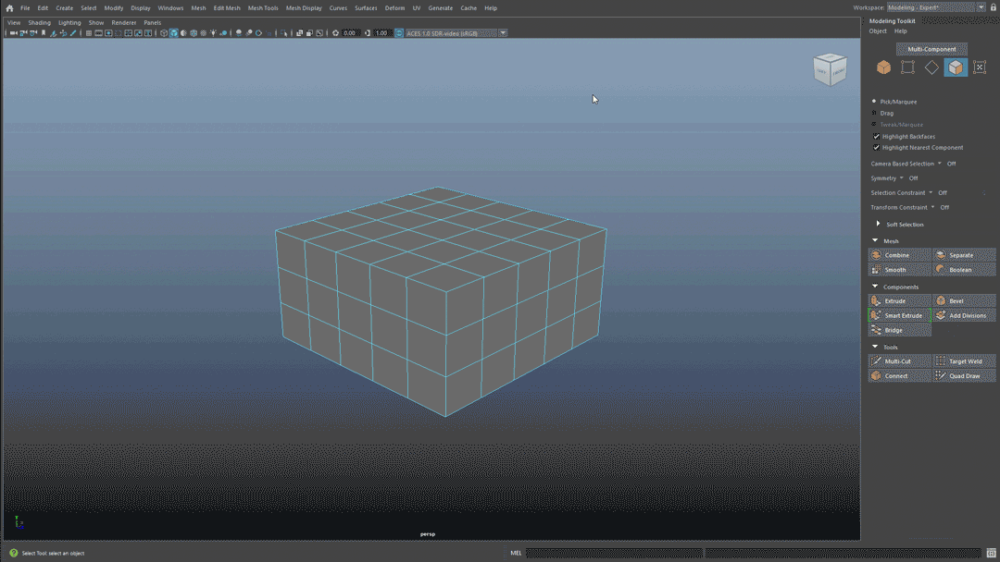

Maya 中新的建模更新包括对“智能挤出”(Smart Extrude)的改进。

Maya 中的“智能挤出”(Smart Extrude)更新
智能挤出(Smart Extrude)是 Maya 的一项强大的挤出功能，可用于在视口中以交互方式挤出面，而无需手动修复在传统“挤出”(Extrude)操作期间出现的双面和未焊接结果。利用“智能挤出”(Smart Extrude)，可以交互地重建和缝合被操作结果完全或部分切割或重叠的面，从而创建新的流形几何体，无需手动修复隐藏面或几何数据。因此，您可以自由地浏览和修改对象上的多边形网格拓扑。
最新更新：
-
现在，当智能挤出(Smart Extrude)处于活动状态时，会在视口中的操纵器上方显示一个图标，使您可以更轻松地区分“移动工具”(Move Tool)操纵器。
- 现在，您可以在多边形建模工具包中访问智能挤出(Smart Extrude)。
- 现在，改进了操纵器和枢轴从“移动工具”(Move Tool)、“旋转工具”(Rotate Tool)和“缩放工具”(Scale Tool)继承设置的行为。
- 智能挤出操作的性能、可靠性和稳定性已得到改进。
若要快速使用“智能挤出”(Smart Extrude)，现在可以执行下列操作之一：
- 在多边形建模(Poly Modeling)工具架中，当您在视口中选择面的组件时，左键单击 可激活智能挤出操作。
- 在建模工具包(Modeling Toolkit)中，当您在视口中选择面的组件时，左键单击“智能挤出”(Smart Extrude)可激活该操作。
注： 默认情况下，单击“多边形建模”(Poly Modeling)工具架或“建模工具包”(Modeling Toolkit)中的按钮将执行智能挤出操作。
提示： 为任何布尔命令指定热键，以快速执行布尔运算，而不会丢失
“视口”(Viewport)中的焦点。请参见
将热键指定给命令。